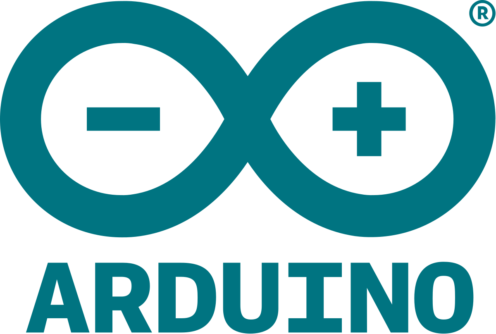
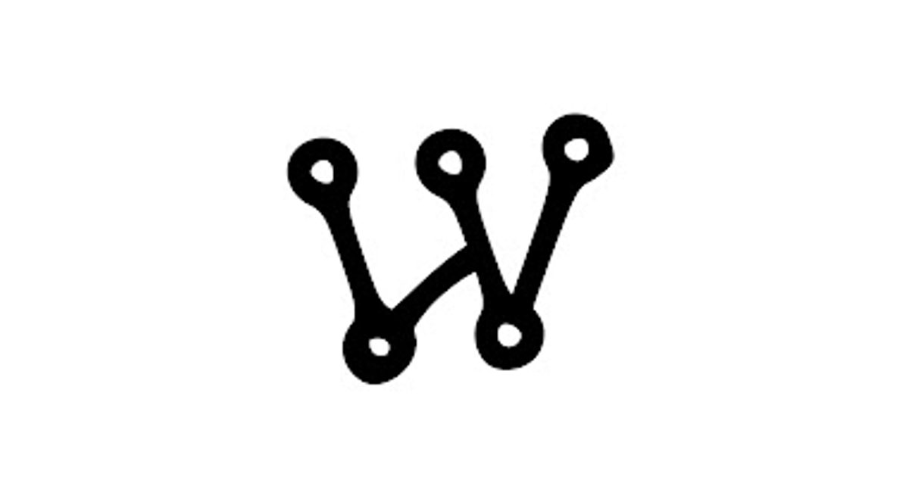
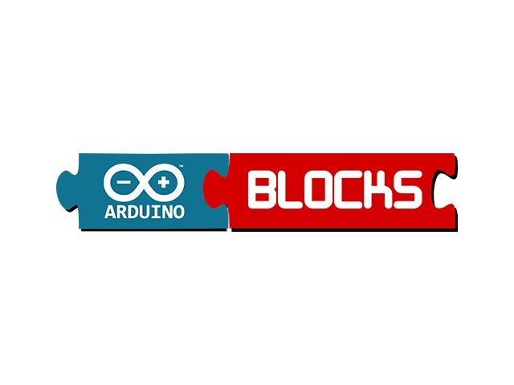
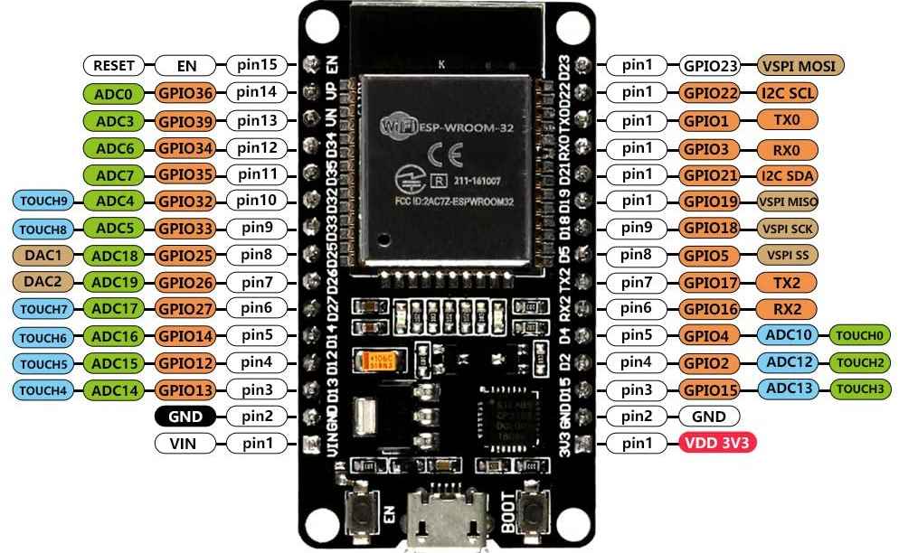

Arduino IDE
El Arduino IDE (Entorno de Desarrollo Integrado) es una herramienta de software utilizada para programar placas de desarrollo como Arduino Uno, Nano, Mega y también microcontroladores más avanzados como el ESP32, este entorno permite escribir código en un lenguaje basado en C/C++, compilarlo y cargarlo directamente en la placa a través de un cable USB. Es ampliamente utilizado en el ámbito educativo y de prototipado debido a su interfaz sencilla y accesible, que facilita el aprendizaje de la programación y la electrónica. Además, cuenta con una amplia comunidad y una gran cantidad de ejemplos, librerías y documentación, lo que lo convierte en una plataforma ideal para el desarrollo de proyectos tecnológicos y de automatización (Macoritto y Rivera, 2022).

Simulador Wokwi
Wokwi es una plataforma en línea que permite simular circuitos electrónicos y programar microcontroladores como Arduino, ESP32, ATtiny, entre otros, sin necesidad de contar con los componentes físicos, esta herramienta es especialmente útil para estudiantes, docentes y desarrolladores que desean probar y depurar sus proyectos antes de llevarlos a la práctica real. Wokwi ofrece una interfaz gráfica fácil de usar, donde se pueden arrastrar y conectar componentes como sensores, pantallas, motores y más. Además, permite cargar el mismo código que se usaría en el Arduino IDE, lo que facilita la transición entre la simulación virtual y la implementación física. Gracias a su accesibilidad desde cualquier navegador web, se ha convertido en un recurso educativo muy valioso en entornos de enseñanza de robótica y electrónica (Moran y Sánchez, 2025).

Arduinoblocks
Arduinoblocks es una plataforma de programación visual que permite crear código para placas Arduino utilizando bloques gráficos similares a los de Scratch, esta herramienta está diseñada para facilitar el aprendizaje de la lógica de programación, especialmente en estudiantes que recién se inician en el mundo de la electrónica y la robótica educativa. Al arrastrar y soltar bloques que representan instrucciones como “encender un LED” o “esperar 2 segundos”, el sistema genera automáticamente el código correspondiente en lenguaje Arduino. Esto ayuda a los usuarios a comprender el funcionamiento del código sin necesidad de escribirlo desde cero, promoviendo un aprendizaje progresivo y amigable Arduinoblocks también permite exportar el código generado para ser usado directamente en el Arduino IDE, lo que lo convierte en un puente eficaz entre la programación por bloques y la programación basada en texto (Holger, 2021).

MIT App Inventor
App Inventor es una plataforma de desarrollo creada originalmente por Google y actualmente gestionada por el Instituto de Tecnología de Massachusetts (MIT), que permite diseñar y programar aplicaciones móviles para dispositivos Android de forma visual y sencilla.
Utiliza un entorno de programación basado en bloques, similar a piezas de rompecabezas, lo que facilita el aprendizaje de la lógica de programación, especialmente para estudiantes, docentes y personas sin experiencia previa en código. A través de una interfaz gráfica, los usuarios pueden arrastrar y soltar componentes como botones, textos, sensores o conexiones Bluetooth, y luego programar su comportamiento usando bloques lógicos que representan acciones y condiciones.
App Inventor es ampliamente utilizado en entornos educativos por su accesibilidad y su capacidad para fomentar la creatividad, la resolución de problemas y el desarrollo de aplicaciones útiles que pueden ser instaladas directamente en un teléfono Android (Chuquicallata, 2024).

Placa de Programación-ESP32
Es una placa de desarrollo construida en torno al microcontrolador ESP32, desarrollado por Espressif Systems, que destaca por integrar de forma nativa conectividad WiFi y Bluetooth, lo que permite la comunicación inalámbrica sin necesidad de módulos adicionales. Además, cuenta con una gran cantidad de pines de entrada y salida digitales (GPIO), lo que la convierte en una opción ideal para el desarrollo de proyectos relacionados con la domótica, el Internet de las Cosas (IoT), la robótica y la automatización, permitiendo el control e integración de sensores, actuadores y dispositivos externos de manera eficiente y flexible (Flores, 2024).

| Categoría |
Pines comunes |
Uso principal |
| Alimentación |
3V3, VIN, GND |
Para alimentar la placa o sensores. |
| Digitales (GPIO) |
GPIO 0–39 (excepto 6–11) |
Entrada/salida digital. Control de LEDs, relés, botones, etc. |
| Analógicos (ADC) |
Analógicos (ADC)
GPIO 32, 33, 34, 35, 36, 39 |
Leer señales analógicas (como sensores de temperatura o luz). |
| PWM |
Casi todos los GPIO |
Control de brillo de LEDs, velocidad de motores. |
| UART (Serial) |
GPIO 1 (TX), GPIO 3 (RX) |
Comunicación con el PC o módulos como Bluetooth, GPS. |
| I2C |
GPIO 21 (SDA), GPIO 22 (SCL) |
Comunicación con sensores como acelerómetros o pantallas OLED. |
| SPI |
GPIO 23 (MOSI), 19 (MISO), 18 (SCK), 5 (CS) |
Comunicación rápida con módulos como pantallas TFT o memorias. |
| Solo entrada |
GPIO 34, 35, 36, 39 |
Pines que solo pueden usarse como entrada. |
| Reservados (no usar) |
GPIO 6–11 |
Usados por la memoria interna del ESP32, no conectarlos. |